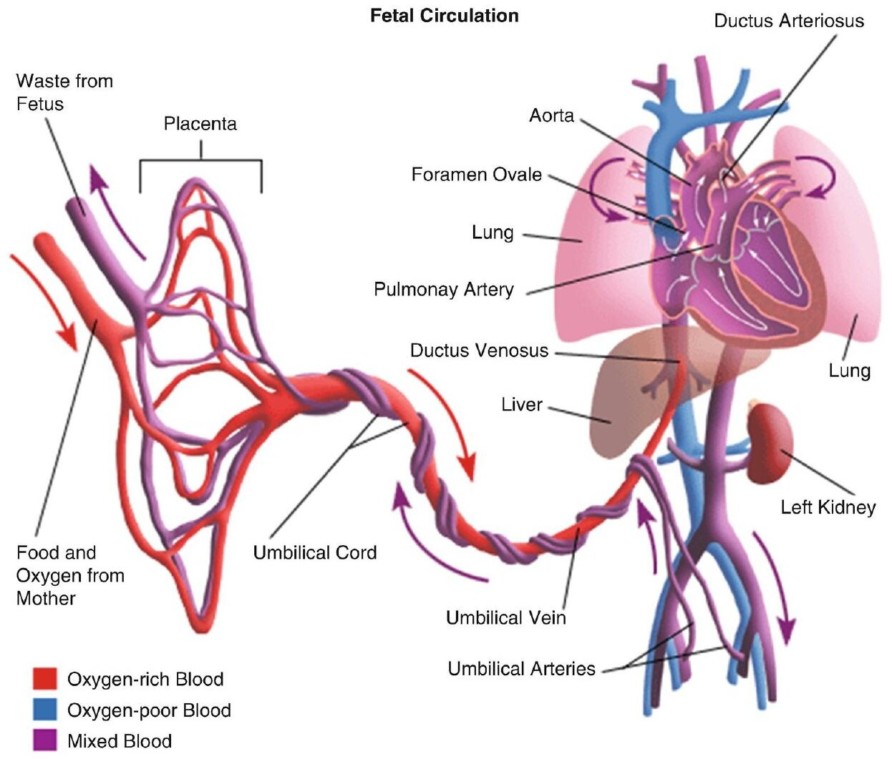
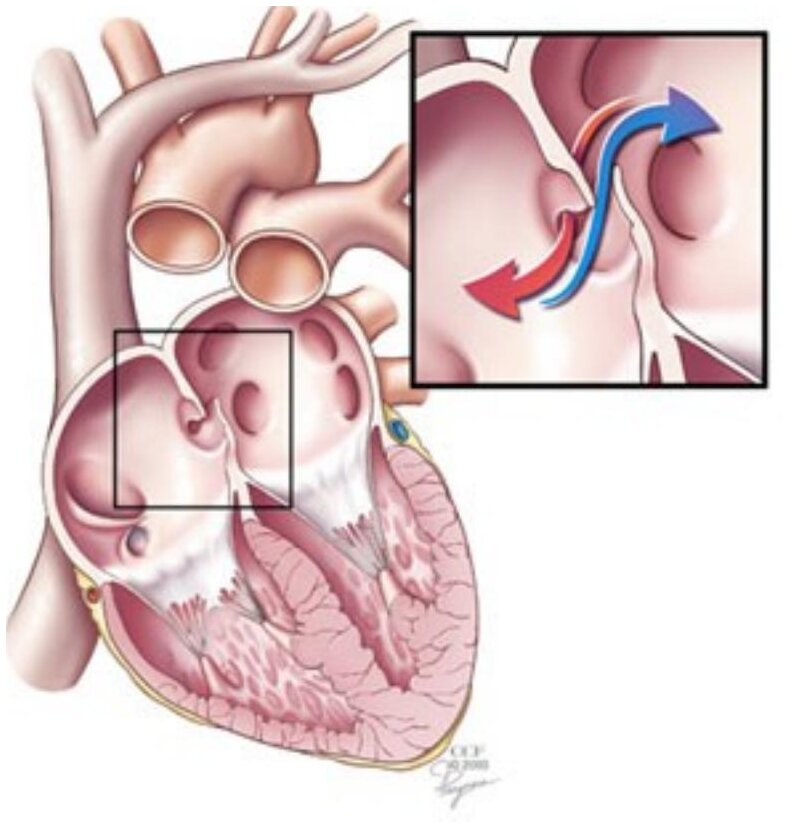
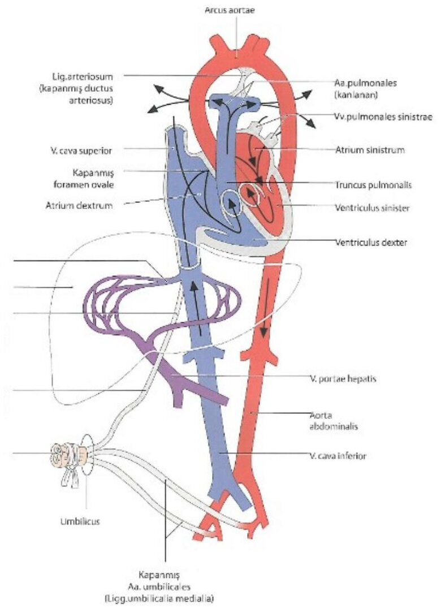

Bölüm 6 · Circulatio fetalis
Fetüsün akciğerleri sıvıyla doludur ve gaz alışverişi yapmaz. Oksijeni plasentadan alır. Bu yüzden fetal dolaşım, kanı akciğerlerden uzak tutan ve en iyi oksijenlenmiş kanı kalbe ve beyne yönlendiren üç kısa yolla (şantla) çalışır. Doğumda ilk nefesle birlikte bu yollar birkaç dakika içinde işlevsizleşir, aylar içinde de bağlara dönüşür. Bu bölüm fetal dolaşımı, doğumdaki değişikliklerin mekanizmasını ve bu değişiklikler aksadığında ortaya çıkan anomalileri anlatır. Erişkin kalbindeki fossa ovalis'in, lig. arteriosum'un ve karaciğerdeki bağların neden orada olduğu da burada açıklanır.
Erişkinde kan akciğerde oksijenlenir. Fetüste bu görevi plasenta yapar. Bu tek fark dolaşımın bütün düzenini değiştirir:
Fetal dolaşımın üç şantı bu üç gerçeğe verilmiş cevaplardır. Ductus venosus plasentadan gelen kanın bir kısmını karaciğerden geçirmeden kalbe ulaştırır. Foramen ovale sağ atriyuma gelen oksijenli kanı akciğere hiç uğramadan sol kalbe, oradan kalbe ve beyne gönderir. Ductus arteriosus sağ ventrikülün akciğere gönderemediği kanı aortaya aktarır.
Sunumun anlattığı yol adım adım şöyledir (Şekil 6.1 ve 6.2):
Bu düzende iki kan akımı sağ atriyumda neredeyse karışmadan birbirinin yanından geçer: VCİ'den gelen oksijenli akım foramen ovale'ye ve sol kalbe, VCS'den gelen oksijeni az akım triküspit kapaktan sağ ventriküle. Sonuç olarak dolaşımın farklı noktalarında kanın oksijen doygunluğu farklıdır ve en oksijenli kan en çok ihtiyaç duyan organlara gider (Şekil 6.2).

Foramen ovale'nin nasıl bir kapak gibi çalıştığını ve doğumda neden kapandığını anlamak için atriyumların nasıl bölündüğünü bilmek gerekir. Gelişim iki zarla olur:
Sonuçta iki zar üst üste biner ama delikleri aynı hizada değildir: foramen ovale altta, foramen secundum üstte. Sağ atriyumdaki basınç yüksekken kan foramen ovale'den girer, ince septum primum'u sola doğru iter ve foramen secundum'dan sol atriyuma geçer. Sol atriyumun basıncı yükselirse ince septum primum sağa itilir, kalın septum secundum'a yaslanır ve geçişi kapatır. Septum primum böylece tek yönlü bir kapak gibi çalışır (valvula foraminis ovalis). Erişkinde fossa ovalis'in ince tabanı septum primum'dan, kabarık kenarı (limbus) septum secundum'un serbest kenarından gelir.
Sinus venosus'un kaderi. Embriyonda bütün venler önce sinus venosus adlı ortak bir boşluğa, o da sağ atriyuma açılır. Sinus venosus'un iki boynuzu vardır. Sağ boynuz sağ atriyuma katılır ve onun düz duvarlı sinus venarum cavarum bölümünü oluşturur. İlkel atriyumun kaslı duvarıyla bu katılan kısım arasındaki sınır crista terminalistir (SA düğüm bu sınırda gelişir). Sol boynuz küçülür ve sinus coronarius'a dönüşür. Sol boynuza açılan sol ana venin artığı da sol atriyumun arkasındaki v. obliqua atrii sinistri'dir (Bölüm 4.5). Bu sol taraf yapıları gerilemezse erişkinde sinus coronarius'a açılan bir sol VCS kalır (Derleme S29: sinus venosus'un sol boynuzunun koroner sinüse dönüştüğü ve foramen secundum'un septum primum'a ait olduğu doğru ifadelerdi).
Doğumda plasentanın yenidoğanla bağlantısı kesilir, solunum başlar ve akciğerler havayla dolar. Değişiklikler bir domino gibi birbirini tetikler:
| Fetal yapı | Kapanma | Erişkindeki artığı | Artığın yeri |
|---|---|---|---|
| Foramen ovale | Fonksiyonel: ilk nefesle; anatomik: aylar içinde (%10-15'te olmaz) | Fossa ovalis ve limbus | Sağ atriyumda septum interatriale |
| Ductus arteriosus | Fonksiyonel: günler; anatomik: 1-3 ay | Lig. arteriosum (Botallo) | Truncus pulmonalis'in çatalı (sol a. pulmonalis kökü) ile arcus aortae'nin alt yüzü arası |
| A. umbilicalis (distal kısım) | Dakikalar | Lig. umbilicale mediale | Karın ön duvarının iç yüzü (plica umbilicalis medialis) |
| V. umbilicalis | 2-5 gün | Lig. teres hepatis | Lig. falciforme'nin serbest kenarı |
| Ductus venosus | Günler-haftalar | Lig. venosum | Karaciğerin arka yüzündeki fissura ligamenti venosi |


Lig. arteriosum'un erişkinde önemli bir komşusu vardır: n. laryngeus recurrens sinister arcus aortae'nin altından, tam bu bağın lateralinden dolanarak boyna döner. Gelişimde sol 6. faringeal arkus arterinin distal kısmı ductus arteriosus olur ve sinir bu arterin altında kaldığı için onun artığının etrafından kıvrılır. Bu bölgedeki bir kitle ya da genişlemiş bir sol atriyum siniri sıkıştırıp ses kısıklığı yapabilir.
Doğru: B. Ductus arteriosus truncus pulmonalis'in çatalını arcus aortae'ye bağlayan fetal damardır. Doğumdan sonra açık kalırsa kan yüksek basınçlı aortadan a. pulmonalis'e geçer ve akciğer dolaşımının basıncı yükselir.
A yanlış: VSD iki ventrikül arasındaki delik, C yanlış: ASD iki atriyum arasındaki delik, D yanlış: patent foramen ovale iki atriyum arasındaki fetal geçidin kapanmamasıdır. Üçü de büyük arterler arasında değil, kalp boşlukları arasındadır. E yanlış: Fallot tetralojisinde bir VSD bulunur, ama büyük arterler arasında bir bağlantı tanımın parçası değildir.
Doğru: B. Fallot tetralojisinin dört bileşeni pulmoner darlık, VSD, aortanın septum üzerine oturup sağa kayması ve sağ ventrikül hipertrofisidir.
A yanlış: tetralojinin bileşeni pulmoner darlıktır. Pulmoner kapağın hiç açılmadığı atrezi Fallot'nun en ağır ucunda görülebilir, ama tanımdaki bileşen değildir. C yanlış: aorta sağa doğru, VSD'nin üzerine kayar (dekstropozisyon). D yanlış: hipertrofi dar çıkış yoluna karşı çalışan sağ ventrikülde gelişir. E yanlış: ASD tetralojinin bileşeni değildir. Dört bileşene ASD eklenirse tabloya Fallot pentalojisi denir.
Doğru (yanlış ifade): E. Bulbar ve trunkal çıkıntılar birleşerek aortikopulmoner septumu oluşturur. Bu septum yaklaşık 180 derece sarmal dönerek truncus arteriosus'u aorta ve truncus pulmonalis'e ayırır. Atriyumlar arasındaki septum ile hiçbir ilgisi yoktur.
A doğrudur: bulbus cordis ilkel kalp tüpünün bir bölümüdür ve sağ ventrikülün conus arteriosus'unu ve sol ventrikülün vestibulum aortae'sini oluşturur. B doğrudur: septum primum'un üst kısmında açılan delikler foramen secundum'u yapar. C doğrudur: endokardiyal yastıklar birleşerek ortak AV kanalını sağ ve sol deliklere böler. D doğrudur: sol boynuz küçülerek sinus coronarius'a dönüşür.
Doğru: C. Akciğerler açılınca vv. pulmonales ile sol atriyuma gelen kan artar ve sol atriyum basıncı yükselir. Plasenta devreden çıktığı için VCİ akımı ve sağ atriyum basıncı düşer. Basınç farkı tersine dönünce ince septum primum kalın septum secundum'a bastırılır ve delik kapanır.
A yanlış: septum secundum doğumda büyümez. Kapanmanın ilk anı tümüyle basınçla olur, zarların kaynaşması aylar sürer. B yanlış: ductus arteriosus'un kapanması ayrı bir olaydır ve oksijen artışıyla düz kasın kasılmasından kaynaklanır. D yanlış: v. umbilicalis pıhtıyla değil düz kas kasılmasıyla kapanır ve bu da günler sürer. E yanlış: Eustachius kapağı fetüste VCİ kanını deliğe yönlendirir, deliği örtmez.
Doğru (yanlış eşleştirme): D. V. umbilicalis'in artığı lig. falciforme'nin serbest kenarındaki lig. teres hepatis'tir. Lig. venosum ductus venosus'un artığıdır.
A doğrudur: lig. arteriosum truncus pulmonalis'in çatalını arcus aortae'ye bağlar ve sol n. laryngeus recurrens'in komşusudur. B doğrudur: fossa ovalis sağ atriyumun septal duvarındadır. C doğrudur: a. umbilicalis'in distal kısmı kapanarak lig. umbilicale mediale'yi oluşturur, proksimal kısmı a. vesicalis superior olarak açık kalır. E doğrudur: lig. venosum karaciğerin arka yüzündeki fissurada yer alır.